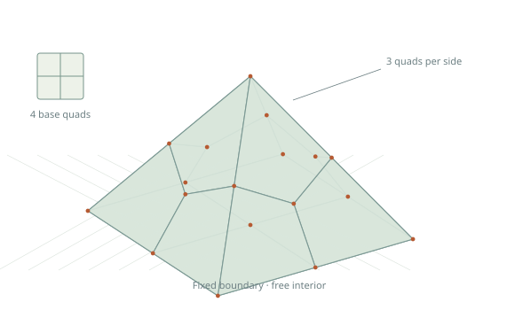
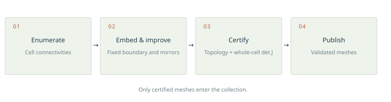
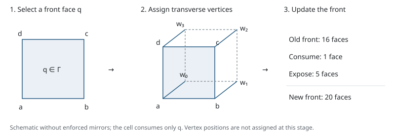
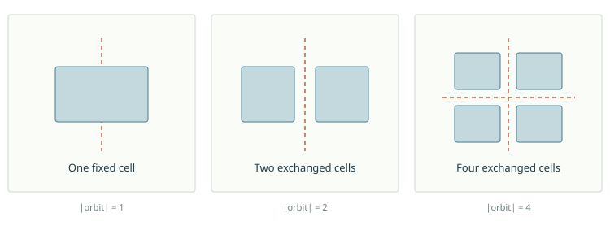
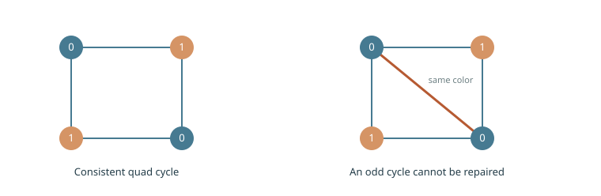
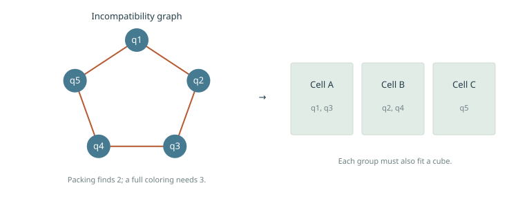
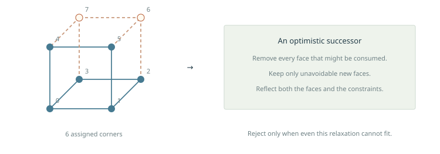
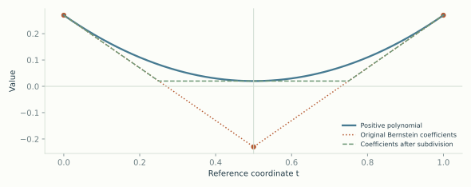
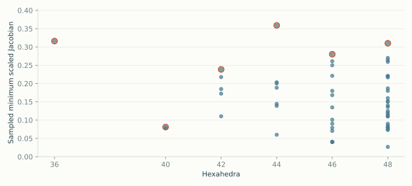

Problem definition
The 3D search takes an oriented quadrangulated sphere with prescribed boundary vertices. Schneiders’ pyramid is one configuration, with 18 boundary vertices, 32 boundary edges and 16 quadrilaterals: four on its square base and three on each triangular side. The target is a regular, conforming cubical 3-ball: each cell has eight distinct vertices, and two cells intersect in the empty set, a common vertex, a common edge, or a complete common face. Its trilinear cells must have strictly positive Jacobian determinants throughout their reference cubes.

The implementation is an independent C++ constraint search developed following the Hextreme work of Verhetsel, Pellerin and Remacle. It allows cells to attach along disconnected subsets of the front. Neither the placed subcomplex nor the unfilled remainder is required to be a ball at an intermediate step.
Search candidates are combinatorial objects. Necessary geometry constraints during enumeration do not establish an embedding. Only meshes passing the separate validation pipeline appear in the viewers. An exhausted search is evidence within the implemented problem class and bounds, conditional on implementation correctness; it is not a machine-checkable unsatisfiability certificate or an unrestricted optimality theorem.

Boundary configurations
The native mirror_search executable searches a finite boundary mesh. Its input contains only boundary vertices, numbered contiguously, and oriented quadrilaterals. Symmetry must preserve both the boundary coordinates and connectivity. The separate geometry stage determines which boundary coordinates may move.
| Configuration | Search and embedding constraints | Launcher |
|---|---|---|
| Schneiders’ pyramid | Prescribed 16-quad boundary. The root launcher uses two diagonal mirrors and cap 36; optimization fixes all boundary coordinates. | run-pyramid.sh |
| Geode | Fixed top and bottom; four equal side patches matching for direct translation tiling. The root launcher searches Q2-01, Q4-01 and Q5-03 with two diagonal mirrors. Fixed-coordinate corner and location pruning are disabled because side coordinates may move during embedding. | run-geode.sh |
| Upper transition | Six interface quads, eight top quads, and a finite periodic side cut. The default cap-26 search imposes one diagonal mirror in a rotated coordinate frame. Other-diagonal and two-mirror searches keep the caps and use a different side cut. All boundary coordinates stay fixed during HexOpt. | run-geode-top.sh |
| Refinement | 9 → 1, 16 → 4 or 25 → 9 regular cap grids, with four identical translated side walls. The launcher uses two axial mirrors and caps 13–34 for the six displayed cases; all boundary coordinates stay fixed during HexOpt. Diagonal mirrors are also supported. | run-refinement.sh |
| Square side walls | 2D quadrangulations with left–right symmetry, top/bottom midpoints, and equal vertical edge subdivisions, through 12 quads. | run-side-walls.sh |
The full periodic slab uses quotient vertices and integer lattice offsets; its opposite sides are identified. The finite upper-transition search does not enumerate the full periodic slab problem. The periodic collection has its own quotient-topology validation.
Search algorithm
Inputs and state
The inputs are the oriented boundary quadrangulation B, the maximum cell count Hmax, the interior-vertex allowance, and an optional symmetry group G. Boundary coordinates are fixed during search; geometry-based rejections can be disabled when only boundary connectivity is prescribed. Interior vertices are initially absent; the search introduces vertex identities and connectivity, not positions on a spatial grid.
A state consists of the placed cells C, allocated vertices, the action of G on those vertices, and an oriented front Γ. Each front face requires exactly one further incident cell. Initially C is empty and Γ = B. The state also records pair relations (edge, face diagonal or body diagonal), closed-face incidences, and boundary-face owners. Parity, location and compatibility constraints are maintained or derived from these records.
| Quantity | Meaning |
|---|---|
| C | Placed hexahedra, stored as oriented tuples of eight vertex indices. |
| Γ | Faces whose remaining incident cell has not been placed. |
| R = Hmax − |C| | Remaining allowance, measured in cells rather than cell orbits. |
| g(v), g ∈ G | Vertex permutations representing the enforced symmetry. |
| Pair relations and face incidences | Constraints inherited by all extensions of this state. |
Branching on one missing cell
Select one front face q. Its four vertices determine one face of the next cube, leaving four transverse vertices to assign. Each assignment chooses an existing vertex or introduces a new interior vertex orbit. An existing vertex may be a boundary vertex, a previously allocated interior vertex, or a symmetry partner introduced earlier in the same trial. Eight distinct vertices are required within each cell.
Assign the four transverse vertices one at a time. After each assignment, intersect the remaining domains with relation, parity, geometric and overlap constraints. At selected prefixes, test whether any completion could fit the remaining budget. On completing the tuple, generate its entire cell orbit under G, identify fixed copies, and attempt to insert all distinct members together.

Face order 5 chooses q by minimizing the product of four estimated transverse-domain sizes. Ties favor greater incidence with placed cells, then the smaller domain-size sum. These are estimates: later vertex assignments impose additional constraints. Selecting a different face changes traversal order; it does not omit that face’s possible incident cells. Native defaults are mode 5 for zero mirrors or a half-turn, mode 4 for one axial mirror, and mode 3 otherwise. The general one-mirror shell launcher selects mode 5 explicitly.
Recursion and backtracking
search(S):
if a time limit or interruption is reached:
mark the run incomplete; return
if front(S) is empty:
if Euler and GF(2) homology checks pass:
emit the cell connectivity
return
if the cell budget or a necessary front-cover test fails:
return
q = select_front_face(S)
h = cube with q as one oriented face
extend(S, h, four assigned vertices)
extend(S, h, k):
if a necessary partial-completion test fails:
return
if k = 8:
O = distinct cells in the G-orbit of h
T = copy of S
if inserting O into T satisfies the state constraints:
search(T)
return
for v in admissible existing vertices and new-orbit choices:
save a rollback checkpoint
assign vertex k of h to v; propagate constraints
if the assignment is consistent:
extend(S, h, k + 1)
restore the checkpointThis pseudocode groups implementation checks by purpose. In the C++ implementation, dfs selects the face, expand_face fixes the first four vertices, choose enumerates the remaining four, and insert validates and adds the cell orbit. Vertex and constraint updates within choose are rolled back. Recursive successors own separate states, which also permits parallel task execution.
Updating the front
For each inserted cell face, remove its matching front face if present. Otherwise add it with the orientation required of its future neighbor. An incidence record prevents a previously closed face from being reopened and prevents more than two cells from sharing an interior face. Ignoring orientation, the update is a symmetric difference:
Let n = |O|, m be the number of old front faces consumed, and p the number of face pairs internal to O. Then |Γ′| = |Γ| + 6n − 2m − 2p. For example, a first cell consuming one of the 16 boundary faces leaves 20 front faces. A following cell consuming two front faces leaves 22. Front size need not decrease, and the search must allow it to increase before closing the mesh.
Why the branching rule retains completions
Consider a target mesh K extending the current state. Every q ∈ Γ has a unique incident cell h in K that has not yet been placed. The transverse-vertex enumeration contains h, up to first-appearance relabeling of new interior vertices. If K has the enforced symmetry, the whole orbit Gh is also in K. Thus at least one branch extends the current state toward K. Repeating this argument reaches K within the cell and vertex bounds, provided each rejection condition is necessary. Canonical comparisons may discard a particular boundary image of K; they must retain an equivalent representative under the admissible boundary actions.
This argument uses the existence of a remaining cell at q, not a shelling order. The interface between that cell and the placed complex can be disconnected. Requiring every intermediate remainder to be connected or ball-shaped would restrict the enumeration and invalidate this argument for the general target class.
Termination and interpretation
Every recursive successor adds at least one cell, and each transverse choice comes from a finite vertex allowance. The depth is at most Hmax. A closed front triggers Euler and GF(2) homology checks; these necessary tests do not recognize all cubical 3-balls or establish a geometric embedding. Emitted candidates therefore pass through the separate manifold and geometry validation described below.
An exhaustive run must use the full vertex bound, finish every branch and retain all admissible orbit types. A timeout establishes no lower bound. Conversely, failure of the coordinate optimizer to embed an emitted connectivity is not a proof that the connectivity has no positive embedding.
Cell and vertex bounds
For a quadrangulated sphere with B boundary quads, Vb = B + 2 and Eb = 2B. Face counting, Euler’s identity and interior vertex degree at least four give the general allowance:
The solver uses this bound unless --interior supplies a smaller allowance. Such a reduction restricts the search. The numeric cell-cap limit is 48, and the requested total vertex allowance must be strictly less than 112. Large boundaries can therefore require a lower cell cap when using the full vertex bound. Front kernels also have a 256-face capacity; a capacity error fails the run and is not a completed enumeration.
For the pyramid, let H be the number of cells and Vi the number of interior vertices. Counting face incidences gives F = 3H + 8. Euler’s identity V − E + F − H = 1, with V = Vi + 18, gives E = Vi + 2H + 25. Each interior vertex has degree at least four, because its link is a triangulated sphere. Boundary edges already contribute 64 to the degree sum. Therefore:
Vi ≤ 2H − 7, V ≤ 2H + 11.
For the pyramid, cap 48 needs at most 107 vertices, fitting the solver’s 112 vertex slots and 128-bit relation masks. A cap is an upper bound, so a cap-48 search may also discover smaller meshes.
Enforced symmetry
With --mirrors 0|1|2, the group is trivial, C₂ generated by one reflection, or C₂ × C₂ generated by two perpendicular reflections. Axial planes are x = 0 and y = 0; diagonal planes are x = y and x = −y. The search adds complete cell orbits. By the orbit–stabilizer theorem:
Two mirrors allow orbit sizes one, two and four. A cell preserved by a mirror may straddle that plane; a cell preserved by both mirrors has orbit size one. Odd cell counts are therefore allowed. The regression fixtures include a symmetric 27-cell grid.

Half-turn symmetry
--half-turn 1 instead imposes only the rotation (x,y,z) ↦ (−x,−y,z). It cannot be combined with nonzero --mirrors. This C₂ action preserves orientation: transformed cell tuples do not receive the orientation reversal used for reflections. Vertices are fixed on the rotation axis or occur in pairs; cells may likewise be fixed or exchanged. Rotation-specific fixed-cell tests constrain the cube action. Plane-side separation is disabled, since a half-turn has no mirror plane. Orbit-aware cover and partial-cover tests still apply.
New interior vertex orbits are introduced on demand and relabeled by first appearance. With two geometric mirrors, vertices have orbit size four off both planes, two on one plane, or one on their intersection. A point fixed by the product of the two reflections lies on their intersection and is fixed by each reflection; an abstract product-only stabilizer is excluded for this geometric reason.
Each selected front face needs one remaining incident cell in every completion. Enumerating that cell’s possible orbit preserves all completions. If a group action preserves the selected face, it must preserve that unique remaining cell. These stabilizer constraints restrict transverse vertices before enumeration.
2D side-wall enumeration
The separate quad_disk_search grows a conforming quadrilateral disk from an oriented boundary edge. For the Geode catalog, top and bottom each have two edges; each vertical side has r additional vertices, so the rim has 6 + 2r vertices. Euler and edge incidence give I = Q − r − 2 interior vertices for Q quads. Thus Q ≤ 12 requires only r = 0,…,10.
The default search inserts reflection orbits of quads, with fixed vertices on the symmetry axis and exchanged vertex pairs. It checks parity, proper quad intersections, edge incidence and vertex links. An oriented traversal removes interior-label duplicates. The catalog builder identifies vertical flips, computes rational harmonic coordinates, and verifies positive quad corners, nonintersecting edges, area and reflection exactly. An individual-quad mode tests symmetry only at completion; it cross-checks the orbit search through 10 quads. Boundary cases run concurrently, while each native disk search is serial. Details and all patterns are on the side-wall page.
The refinement mode accepts --bottom-segments and --top-segments. With b bottom segments, t top segments, and r additional vertices per vertical edge, the boundary has B = b + t + 2r + 2 vertices and I = Q − B/2 + 1 interior vertices. B must be even. When b is odd, reflection exchanges the bipartite vertex colors, so no interior vertex can be fixed by that reflection. The refinement side-wall collection uses b/t = 1/3 and 2/4 with Q ≤ 8, and b/t = 3/5 with Q ≤ 10; r = 0 or 1 in all cases, with both enumeration modes cross-checked. Top–bottom flips remain distinct because the cap grids differ.
Local consistency and face budgets
A pair of cube vertices has Hamming distance one, two or three: an edge, face diagonal or body diagonal. A previously established relation cannot change in a regular cubical complex. In particular, sharing a face diagonal forces sharing its whole face; two isolated opposite vertices are not a permitted cell intersection.
The implementation precomputes legal overlap patterns for a common vertex, edge or face, plus identical oriented cells when identifying orbit copies. During transverse-vertex assignment it projects those patterns onto the assigned positions. If no pattern survives, no later assignment can repair the intersection. Candidate domains intersect these relation masks, face obligations, parity classes and geometry constraints before iterating vertex choices.
Let F be the current front size, R the remaining cell allowance, n the number of distinct cells in a proposed orbit, m the old front faces consumed, and p the new internal face pairs within that orbit. Then:
This necessary budget can be tested before all vertices are known by using optimistic upper bounds on m and p and a lower bound on orbit cost. A failed optimistic bound rejects safely. Completed orbits additionally check exact face incidence and proper intersections against every placed cell and other orbit member.
Bipartiteness and exact geometry
The edge graph of a cubical 3-ball is bipartite. Over GF(2), every graph cycle is a sum of quadrilateral face boundaries because H₁ vanishes. Every such boundary has even length, so every cycle does too. Maintain colors c(v) with c(u) ⊕ c(v) = 1 on edges. An odd cycle in a partial graph remains an odd cycle in every extension.

Union by size or rank, without path compression, makes exact rollback inexpensive. A symmetry’s color flip is fixed by its action on the connected boundary. These parity constraints can remove a domain value before building a trial cell.
Mirror side constraints
A cell exchanged with a distinct reflected cell cannot have interior points on both sides of the reflection plane. Its connected interior would meet that plane, creating an interior point shared with its reflected copy. A side-constraint union-find enforces equal signs within an exchanged cell and opposite signs for reflected vertices. Self-fixed cells are allowed to cross the plane.
Corner determinants and halfspaces
Four known corner coordinates give an exact necessary determinant test. With three fixed coordinates and one unknown vertex x, the corner determinant D(x) is affine. With P the convex hull of all supplied boundary vertices:
If this maximum is nonpositive, strict validity is impossible. When several corners constrain the same unknown point, each gives a strict halfspace. The pair test checks whether two such halfspaces intersect P, using exact projected endpoint and segment inequalities. Infeasibility is a necessary-condition rejection; pairwise feasibility is not a claim of joint feasibility. Arithmetic uses exact representations of the supplied binary64 coordinates, so floating-point tolerances do not decide these determinant and halfspace rejections. The pairwise location test is constructed only for at most 24 boundary vertices; above that it is skipped. Precomputed corner-domain tables are built for at most 32 boundary vertices; larger inputs use the exact scalar corner checker. These fallbacks weaken pruning without adding rejections. They are distinct from the coordinate matching used to detect boundary symmetries.
Component and homology bounds
A face-connected component of h remaining cells has at least h − 1 internal face pairs, so its boundary has at most 4h + 2 faces. For c components and at most R remaining cells:
We must upper-bound c rather than assume the remainder is connected. Each remaining component supplies a nonzero front 2-cycle. Their disjoint cell supports, together with injectivity of the completed ball’s boundary map ∂₃, make those cycles independent. Thus c ≤ dim ker ∂₂ on the front. This nullity is computed over GF(2). Edges incident to exactly two front faces yield union-find equalities; higher-incidence edges retain their full parity equations.
Completion bounds during a partial orbit
Let A be the outer boundary together with placed cells and B the next cube. Mayer–Vietoris gives Δβ₂(A) ≤ β₁(A ∩ B). For a subcomplex X of a cube boundary, β₁(X) = e − v + β₀ − f + β₂. The last term is one only for the complete cube boundary. Shared-face terms cancel against the face budget, yielding the necessary inequality below for n new cells:
Mj is an optimistic graph of possibly shared cube edges. Adding edges cannot decrease cycle rank, and bj is upper-bounded by one when all twelve edges remain possible. A table covers all 4,096 cube-edge masks. This allows early completion checks for partial zero- and one-mirror assignments and full-orbit checks for two mirrors. The underlying homological tool is described in Hatcher, Chapter 2.
Packing, coloring, and cube witnesses
Every front face must be assigned to a future cell. A cell can own at most six front faces, and those faces must fit a single oriented cube while respecting current relations, parity and geometry. Put an edge between two front faces when no such common cube is possible. A clique of size k in this incompatibility graph requires at least k future cells. Equivalently, it is an independent set in the compatibility graph stored by the implementation.

A bounded cover search assigns colors as future cells, maintaining explicit compatible oriented-cube witnesses for each group and proper intersections between groups. Connected components of the compatibility graph cannot share a future cell, so their lower bounds add. An initial packing forces distinct groups and removes redundant color permutations. With one mirror or a half-turn, an orbit-aware cover charges one cell for a fixed group and two for an exchanged pair, using the appropriate orientation action and fixed-cell tests.
Auxiliary work limits are conservative: exhausting --cover-work returns “unknown / potentially feasible” and continues the main search. Only proven impossibility rejects. This trades pruning strength for speed without changing the candidate set.
Full future-face closure
If a cover accounts for the entire front and uses every remaining cell slot, no additional hidden cell is available. Every specified new internal face must then find a compatible, oppositely oriented partner among the covered groups. Missing partners reject that cover. This argument does not apply to an incomplete front or a cover leaving unused cell slots.
Partial-assignment cover tests
Cover tests can be applied before the transverse tuple is complete. At five, six or seven known corners, construct an optimistic successor front. Remove every old front face that any completion of the partial orbit could consume. Add only fully known new faces guaranteed not to disappear inside that orbit. Close constraints under the enforced group action.

The minimum orbit cost is one whenever a fixed completion remains possible, otherwise two for one mirror or a half-turn. This partial-cover relaxation is used only for groups of order one or two. Every real completion covers this relaxed front with the resulting allowance. Failure therefore proves that all completions of the partial assignment fail. Future-face closure is disabled here because the front is deliberately incomplete.
First boundary face. A completion contains a cell incident to every prescribed boundary quad, so choosing a particular quad first changes traversal. --root-face N selects its zero-based input index; the solver launcher exposes ROOT_FACE=N. The same quad starts the boundary-isometry comparison order, retaining a lexicographically minimal representative of each mesh orbit. The default ROOT_FACE=auto uses the domain-based rule.
Topological boundary automorphisms. With geometry disabled, --topology-symmetry 1 constructs every automorphism of the spherical quadrangulation by propagating each directed first-face match across neighboring quads. The maps preserve vertex incidence and either preserve or globally reverse orientation. Lexicographic boundary-owner comparisons retain an orbit representative, without imposing symmetry on interior cells. The option is disabled by default and rejects geometry-constrained configurations: a combinatorial boundary map need not preserve prescribed coordinates.
Intersections with placed cells. In zero-mirror mode, each partial cube proposed by the cover test must also admit a regular, consistently oriented intersection with every placed hex. Three shared face corners, for example, force the fourth corner and face orientation. Pair relations alone do not enforce all such joint constraints. Cells sharing fewer than two specified vertices need no further check. Exact partial-cube keys are cached only within the immutable cover call; the inherited face-pair graph is unchanged. A valid completion supplies a witness passing each necessary check. --cover-fixed 0 disables it.
The general one-mirror launcher uses PARTIAL_COVER=6 PARTIAL_WORK=0: the zero work limit retains the cheap packing rejection. The auxiliary work allowance is a runtime parameter, not a change to the admissible mesh class. Zero-mirror mode retains a positive partial-cover work allowance by default.
Boundary canonical representatives
The prescribed pyramid admits the eight D₄ boundary isometries. A mesh can be represented by the oriented cells owning ordered boundary faces, with interior vertex labels normalized by first appearance. Compare this code under admissible boundary transformations and retain a lexicographic representative. An unknown face owner stops a partial comparison: it cannot be treated as a known larger or smaller entry.
Without enforced mirrors, using D₄ removes equivalent copies without requiring the mesh itself to be symmetric. With one mirror A, use only transformations g satisfying gA = Ag. This centralizer has four boundary actions; A is already enforced, so the extra quotient is at most a factor of two. It does not impose a second mirror. Boundary canonical pruning is disabled in two-mirror mode. For generic inputs, the geometric quotient uses only signed x/y permutations that preserve the supplied boundary coordinates and oriented quads; it does not discover arbitrary spatial isometries. Half-turn mode likewise retains only boundary maps commuting with the rotation. The Geode and upper-transition launchers disable boundary canonical pruning.
A root-owner leader bound additionally limits transverse codes. Reject a partial assignment only when its optimistic maximum cannot reach the required canonical floor. Cached answers must include this floor or invalidate affected positive entries when it changes. Earlier negative compatibility answers remain valid as monotone constraints accumulate.
Implementation and parallel execution
- Compiled pair patterns. The 625 repeated-label patterns (5⁴) classify face-pair equality cases. Twenty relative oriented face placements cover five cube faces and four rotations. Relation and relative-color requirements become bit masks; fixed boundary geometry is cached.
- Proper-intersection masks. Legal common subcomplexes are precomputed, with an independent reference checker in tests. Face-diagonal obligations directly constrain candidate domains.
- Ancestor graph reuse. Reuse compatibility pairs whose constraints are unchanged. Dirty-neighborhood masks limit recomputation; symmetry transports equivalent pair answers. Quick packing can reuse old proven incompatibilities, since adding constraints cannot restore compatibility.
- Bounded exact-key caches. Flat storage compares complete keys; a hash collision cannot establish feasibility or infeasibility. Replacement limits memory. State-dependent geometry and canonical floors remain outside purely static caches or enter the key.
- Face ordering. Mode 5 estimates the product of the four transverse domain sizes, breaking ties with placed incidence and domain sums. This changes visit order, not admissibility.
- Bitsets and rollback. Small fixed masks replace repeated set construction. Relation, parity and side updates have bounded undo records. Precomputation occurs once per run; workers maintain their own mutable state.
Within one cover problem, the state and diagonal obligations are immutable. Partial-face and cube-group queries therefore use exact-key caches scoped to that call; a fresh generation prevents reuse after mutation or address reuse. Partial-cell intersection answers depend only on the two partial cubes and can be cached across states. Coloring keeps forbidden-color masks in place and rolls back only the bits added by a branch. Static incompatibility degrees are computed once per cover problem.
The zero-mirror default auxiliary allowance is 100,000 coloring nodes; --cover-work or COVER_WORK overrides it.
Two-face packing. Pairwise-compatible front faces need not fit together on a cube: three quads may already require more than eight vertices. For a set S containing no feasible triple, each future cell covers at most two members, so at least ⌈|S|/2⌉ cells are required. We retain triples passing the pair graph and necessary cube-face incidence patterns, then greedily remove faces until no retained triple remains. Retaining an impossible triple weakens the bound; it cannot exclude a valid completion. This check is enabled for full zero-mirror states with at most 64 front faces and a positive auxiliary allowance. --two-face-packing 0 disables it.
Search output and validation fixtures
Candidate JSONL records contain oriented cells and vertex symmetry actions. Emission checks Euler characteristic and GF(2) homology; it is not a geometry certificate or a guarantee of one record per isomorphism class. The launchers compare oriented connectivities while fixing boundary labels; the pyramid catalog additionally identifies D₄ boundary images. --replay checks a supplied connectivity along its prescribed search path, optionally with explicit --replay-actions. A successful replay establishes acceptance by the implemented checks, not unseeded discovery or search completion.
OpenMP task search
Workers copy states at task boundaries, with roughly four pending tasks per worker. A full queue recurses inline instead of blocking; the default task depth is unrestricted. All tasks join before SEARCH_FINISHED. Time limits and interruptions report SEARCH_INCOMPLETE with exit code 124; --seconds 0 imposes no time limit. Candidate output from an incomplete run remains usable, but does not certify exhaustion. The native-architecture build option is optional; no unsafe floating-point “fast math” is needed.
Progress counters count events: states means visited recursive states, not globally distinct unlabeled complexes, and tasks is pending work rather than a reliable remaining-time estimate. Early counters can exceed branch counts because many choices are rejected within one branch. A reduction can change the number of visited nodes, the cost per node, or both.
| Reduction | Zero mirrors | One mirror |
|---|---|---|
| Relations, parity, budgets, homology | Yes | Yes |
| Exact corner geometry, cover, partial cover | Yes | Yes, with orbit costs |
| Canonical boundary quotient | D₄ actions | Centralizer actions |
| Pair kernels, caching, ordering, tasks | Yes | Yes |
| Orbit construction and plane-side restrictions | No nontrivial action | One reflection |
These shared optimizations do not imply similar runtimes: removing symmetry introduces many more independent vertex choices and partial complexes.
Optimization, measurement, certification
Embedding starts from a candidate connectivity. For the pyramid, generated embeddings fix all 18 boundary coordinates and preserve their prescribed mirrors. H44-class16 uses the original published coordinates, as described below. These are local geometry optimizations; they do not establish a globally optimal quality for a connectivity.
The adapter uses the public HexOpt gradient kernel at commit 5f46bf4f1c8dbff6cbfbec7ab2c2295ffd4d16b9. It accumulates per-cell scaled-Jacobian gradients and takes capped steps with scale 0.001. The fixed-boundary mode averages under two reflections and restores boundary coordinates. The affine mode projects onto disjoint coordinate columns that encode symmetry and tied boundary motion. The launchers use threshold increments of 0.01, up to 300,000 iterations per attempt and a 50,000-iteration stall limit. Restarts perturb a harmonic initialization. The first certified embedding is exported; it may differ from the gallery’s selected coordinates and quality. The launchers use six starts by default and a 120-second timeout per HexOpt attempt. Pyramid and Geode variants run concurrently up to THREADS; the upper-transition launcher embeds candidates sequentially. This fixed-step adapter is not the complete augmented-Lagrangian/L-BFGS pipeline described in the HexOpt paper.
For Geodes, HexOpt first tries fixed sides, then allows matched side vertices to move if needed, keeping both caps fixed. Affine variables tie all side copies and horizontal reversal partners for direct translation tiling, and constrain the requested interior mirrors. For the upper transition, affine variables impose one or two axial mirrors in the search frame while fixing the complete finite boundary. Periodic slab optimization ties lattice copies; its documented boundary rule fixes the bottom grid and allows the top grid to translate rigidly in x and y.
Quality definitions
For the trilinear map x(ξ) = Σ Ni(ξ)xi, ξ ∈ [−1,1]³, let J = ∂x/∂ξ and let J₁, J₂, J₃ be its columns.
| Metric | Definition / interpretation |
|---|---|
| Minimum scaled Jacobian | Minimum over all cells and a 21 × 21 × 21 reference grid, including its boundary. Higher is better. |
| Nine-point minimum SJ | Eight corners and center of every cell; a cheaper, less complete sample. |
| 5th percentile / median SJ | Percentile / median of the individual cells’ dense sampled minima. |
| Worst condition number | Maximum sampled κ₂; lower is better. Reveals stretching that SJ alone can miss. |
| Minimum determinant | Minimum sampled det J, in the stored mesh coordinate scale. |
| Cell volume | Integral of det J, evaluated by 2 × 2 × 2 Gauss quadrature, exact for the polynomial degree up to floating-point evaluation. |
| Volume ratio / CV | Largest divided by smallest cell volume; population standard deviation divided by mean volume. |
| Worst edge aspect | Maximum, over cells, of longest divided by shortest of the twelve cell edges. |
Dense-grid extrema are sampled estimates, not certified continuum extrema. All metrics use the stored mesh coordinates before display transforms. The upper-transition search frame scales horizontal lengths by √2 while keeping vertical lengths unchanged, so its quality values cannot be compared directly with a differently scaled geometry. For display only, the viewer maps each cell point to c + (1 − s)(x − c), where c is its vertex centroid and s the shrink setting. Bilinear faces are subdivided for rendering.
Strict positivity over the whole cell
The determinant of a trilinear cell map is of degree at most two in each reference coordinate. After mapping to [0,1]³, write it in the 27-term tensor Bernstein basis. Those basis functions are nonnegative and sum to one:
min bijk ≤ det J(t) ≤ max bijk.
All positive coefficients certify strict positivity everywhere. Otherwise exact de Casteljau subdivision can tighten the bounds. Failure to certify within the subdivision limit means unresolved, not automatically inverted. Rational arithmetic represents the actual stored binary64 coordinates, including their approximation to √2.

For the prescribed pyramid, the acceptance audit also checks prescribed boundary coordinates and quads, opposite internal face orientations, proper combinatorial cell intersections, edge and vertex links, Euler characteristic, GF(2) Betti numbers [1,0,0,0], containment in the pyramid halfspaces, and integrated volume 4√2/3. Boundary and containment residuals use 10⁻¹³; volume error must be below 10⁻¹². Every published mesh has a successful exact whole-cell positivity certificate.
Geode validation additionally checks the fixed cap coordinates and quad cycles, equal side patches, horizontal reversal for translation matching, positive planar boundary quads, box containment and total volume 14/3. The finite upper-transition audit checks its exact fixed boundary, mirror action, manifold links and ball homology. The periodic validator checks quotient face incidence and orientation, vertex/edge links, compatible cell stars, cap preservation and volume per tile; its required GF(2) Betti numbers are [1,2,1,0], those of a torus times an interval. All three require whole-cell positive-Jacobian certificates. The ball-homology and pyramid-volume conditions do not apply to the periodic quotient. Cell-intersection checks compare incidence and shared subcomplexes; they are not a general geometric collision test for arbitrary curved cells. Exact Jacobian certificates establish cellwise determinant positivity, while boundary and topology requirements are checked separately.
Published reference templates
H44-class16 uses the mesh linked from the authors’ publication page, retained byte-for-byte. The search finds this connectivity as class 16; the displayed geometry uses the published coordinates. Its minimum sampled SJ is 0.144498. The viewer applies only the rigid rotation (x, y, z) ↦ (x, −z, y); downloads and Jacobian certificates use the original coordinates. Boundary faces are inferred from connectivity because the file has no quadrilateral section. The published coordinates are rounded: the largest boundary-vertex discrepancy from the prescribed pyramid is 3.5624 × 10⁻⁶. A separate validation profile allows boundary error below 5 × 10⁻⁶ and absolute volume error below 10⁻⁵. Exact whole-cell determinant positivity and topology checks remain required. The strict boundary profile for generated meshes is unchanged.
The gallery also includes the 88-cell mesh of Yamakawa and Shimada (2010), imported from the Hextreme distribution. It preserves the published connectivity and interior geometry after an affine normalization; rounded boundary coordinates are restored, with maximum correction 3.000008 × 10⁻⁶. Its measured minimum SJ is 0.160092. It passes the same exact positivity and topology audit, and its exported geometry has one measured mirror, x = 0 (Cₛ).
Measured symmetries
The pyramid catalog tests every D₄ isometry directly on the exported coordinates, requires a vertex bijection within 10⁻¹⁰ times max(1, coordinate extent), and then compares exact oriented cell connectivity with orientation reversal compensated for reflections. It records action matrices, cell permutations, fixed cells and cell orbits. The 54 generated embeddings have measured group C₂v: two mirrors and a 180° rotation. H44-class16 has the two-mirror connectivity, but the published coordinates have measured group C₁ at this tolerance. These labels describe the actual asset geometry rather than the search configuration.

Pyramid enumeration results
| Cells | Distinct candidates | Certified meshes | Two-mirror enumeration |
|---|---|---|---|
| 36 | 1 | 1 | Both orientations completed |
| 40 | 3 | 2 | Both orientations completed |
| 42 | 5 | 5 | Both orientations completed |
| 44 | 8 | 7 | Both orientations completed |
| 46 | 16 | 14 | Both orientations completed |
| 48 | 35 | 26 | Both orientations completed |
The two-mirror enumeration through 48 cells contains 68 connectivity classes modulo D₄ boundary actions and interior-vertex relabeling. Both axial and diagonal orientations are exhausted within the scope conditions above. Failure to embed a class is not proof that it has no valid geometry. The enumeration includes both the published 36-cell connectivity and the published 44-cell connectivity (H44-class16). The latter is displayed with the authors’ original coordinates. No unrestricted optimality is claimed.
Running the search and tests
Build the HexOpt adapter as described in the repository README before using the mesh-generation launchers. run.sh runs the pyramid, three Geode side configurations, and the 2D side-wall search. The upper-transition launcher is separate. Each launcher writes a fresh output folder; hex runs record search output, HexOpt attempts, validation, quality, and acceptance status.
cmake -S solver -B solver/build -DCMAKE_BUILD_TYPE=Release -DNATIVE_ARCH=OFF
cmake --build solver/build --parallel 2
bash tests/run.sh
THREADS=8 bash run.sh
THREADS=8 bash run-geode-top.sh
python3 -m http.server 8085 --directory docsThe regression suites compare reduced and reference searches, test kernels against independent oracles, exercise published seeds and fixed-cell symmetries, and replay the 54 generated symmetric meshes within the solver’s cap-48 capacity through all three mirror modes, trying admissible boundary images when canonical pruning rejects the supplied orientation. Asset tests recompute exact positivity and topology, hashes and geometric symmetries. Separate published-coordinate tests verify H44-class16 against its source hash and recorded connectivity, reject inversions, and check that the rounding allowance does not affect the strict boundary profile. Browser interaction is checked manually using the preview instructions in the README. Tests support implementation confidence; they do not replace the mathematical scope conditions above.
References
- Xiang and Liu (2018), A 36-Element Solution to Schneiders’ Pyramid Hex-Meshing Problem and a Parity-Changing Template for Hex-Mesh Revision.
- Verhetsel, Pellerin and Remacle, 44-element solution and Hextreme project resources.
- Verhetsel, Pellerin and Remacle (2019), Finding Hexahedrizations for Small Quadrangulations of the Sphere.
- Tong and Zhang (2024), HexOpt; public implementation.
- Hatcher, Algebraic Topology, homology and Mayer–Vietoris.
- Three.js r180 (MIT), used for the interactive viewers via a pinned CDN import.
Figures are generated from repository data or explicitly labeled explanatory examples. The methods above describe this implementation and its assumptions, rather than attributing these implementation-specific reductions to the cited papers.